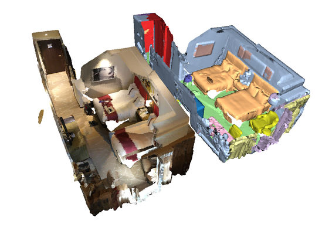

Semantic Segmentation¶
To run the example, please install Open3D with pip install open3d-python.
cd /path/to/MinkowskiEngine
python -m examples.indoor
Segmentation of a hotel room¶
When you run the example, you will see a hotel room and semantic segmentation of the room. You can interactively rotate the visualization when you run the example.
First, we load the data and voxelize (quantize) the data. The voxelization is
done by calling MinkowskiEngine.utils.sparse_quantize.
pcd = o3d.read_point_cloud(file_name)
coords = np.array(pcd.points)
feats = np.array(pcd.colors)
quantized_coords = np.floor(coords / voxel_size)
inds = ME.utils.sparse_quantize(quantized_coords)
Once you prepare a voxelized coordinates and features, we should wrap it with
the MinkowskiEngine.SparseTensor. Before we do that, we should create a
batch by calling MinkowskiEngine.utils.sparse_collate. This function
takes a set of coordinates and features and concatenate the set. Also it append
the batch index to the coordinates. Finally, we pseudo-normalize the features
by subtracting 0.5 from the colors.
# Create a batch, this process is done in a data loader during training in parallel.
batch = [load_file(config.file_name, 0.02)]
coordinates_, featrues_, pcds = list(zip(*batch))
coordinates, features = ME.utils.sparse_collate(coordinates_, featrues_)
# Normalize features and create a sparse tensor
sinput = ME.SparseTensor(features - 0.5, coords=coordinates).to(device)
Finally, we feed-forward the sparse tensor into the network and get the predictions.
soutput = model(sinput)
_, pred = soutput.F.max(1)
After doing some post-processing. We can color the labels and visualize the input and the prediction side-by-side.
The weights are downloaded automatically once you run the example and the weights are currently the top-ranking algorithm on the Scannet 3D segmentation benchmark.
Please refer to the complete indoor segmentation example for more detail.